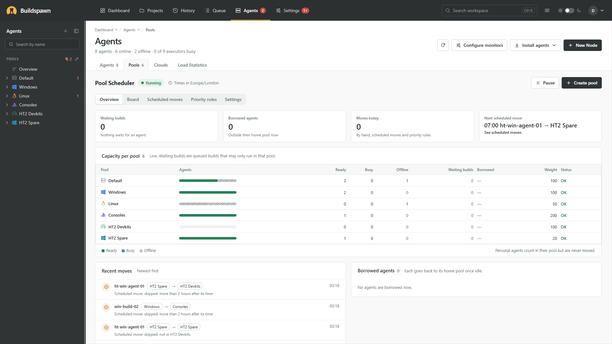
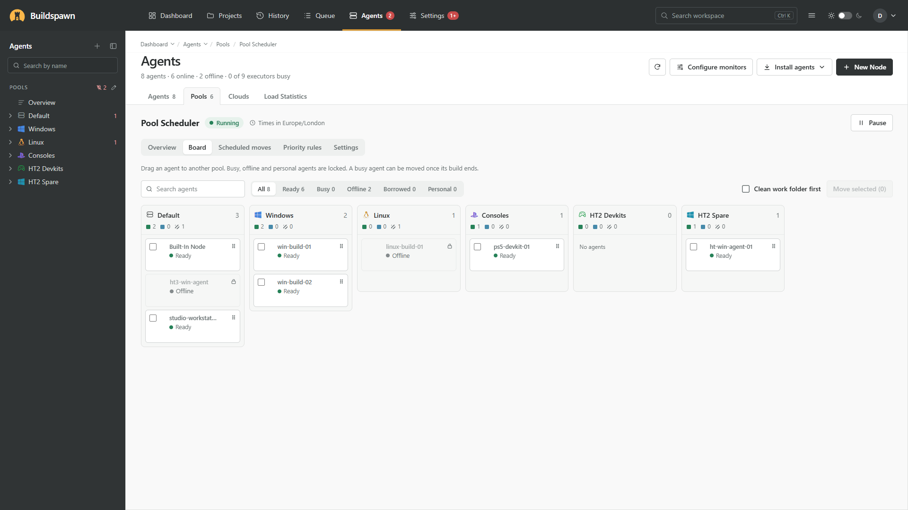
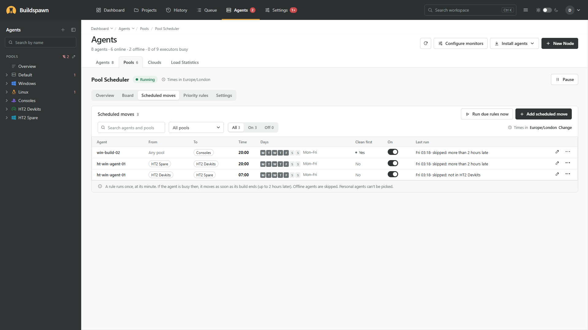
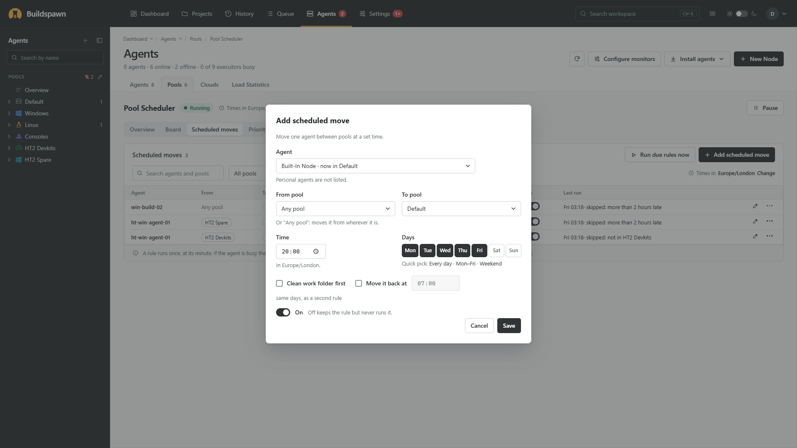
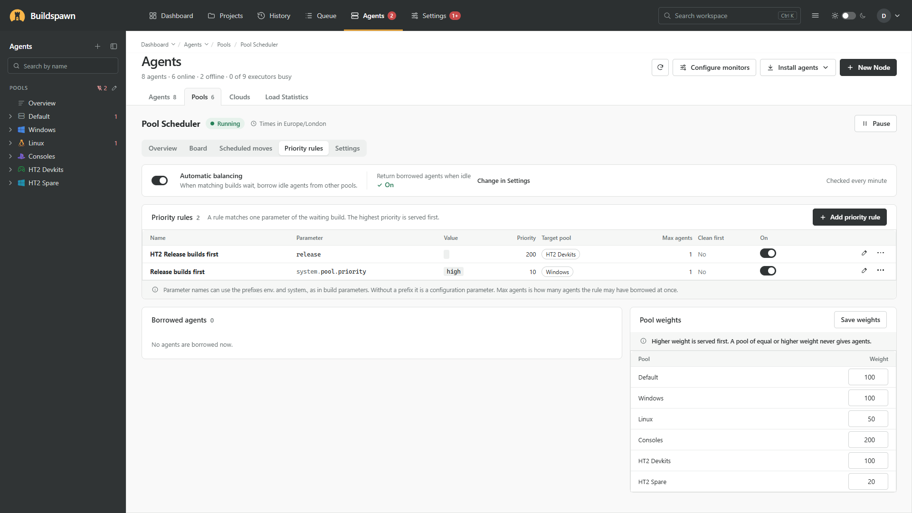
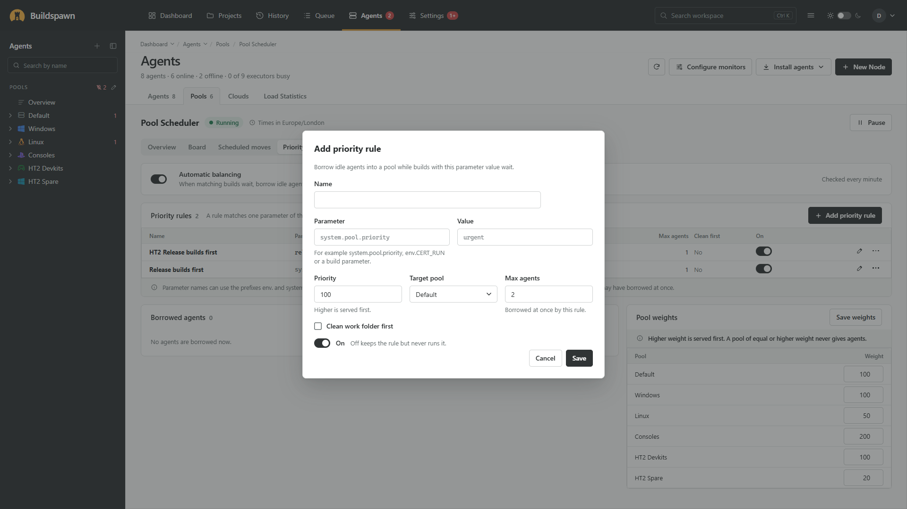

The Pool Scheduler
The Pool Scheduler moves agents between pools for you: by hand on a board, at set times, or by itself when urgent builds are waiting. Use it to lend idle Windows machines to console builds at night, or to clear the queue before a release.
Open Agents and click the Pools tab. The scheduler has five tabs: Overview, Board, Scheduled moves, Priority rules and Settings.
Everyone who can see agents can look at the scheduler. Changing it needs the Administer permission.
Overview

- The strip at the top says whether the scheduler is Running or Paused, and the time zone it uses.
- The cards count Waiting builds, Borrowed agents (agents outside their home pool now), Moves today and the Next scheduled move.
- Capacity per pool shows, for each pool, its ready, busy and offline agents, the builds waiting for it, borrowed agents, its weight and its status. Short of 1 means builds wait and the pool has no free agent.
- Recent moves is the activity log, newest first.
Move agents on the board

- Open the Board tab.
- Drag an agent card to another pool's column. Or tick several cards and click Move selected.
- Tick Clean work folder first if the agent should wipe its work folders before it takes builds in the new pool.
- A message confirms the move. Click Undo within 10 seconds to put the agent back.
Busy, offline and personal agents are locked (a lock icon on the card). A busy agent can be moved once its build ends. Use the chips (All, Ready, Busy, Offline, Borrowed, Personal) and the search box to find agents on a big farm.
You can also move a single agent from the Agents page row menu. That move has Undo too.
Scheduled moves
A scheduled move puts an agent in another pool at a set time, on chosen days. For example, lend a Windows machine to the Consoles pool every weekday evening, and take it back in the morning.

- Open Scheduled moves and click Add scheduled move.
- Pick the Agent. Personal agents are not listed.
- Pick From pool (or Any pool, to move it from wherever it is) and To pool.
- Set the Time, in the scheduler's time zone.
- Click the Days, or use a quick pick: Every day, Mon–Fri or Weekend.
- Tick Clean work folder first if needed.
- Tick Move it back at and enter a time to add the return move as a second rule, on the same days.
- Click Save.

How scheduled moves behave:
- A rule runs once, at its minute.
- If the agent is busy then, it moves as soon as its build ends, up to 2 hours late. After that the move is skipped and logged.
- Offline agents are skipped.
- The On switch turns a rule off without deleting it. The pencil edits it; ⋯ deletes it.
- Run due rules now runs every move that is due right away, even while the scheduler is paused.
Priority rules and weights
Priority rules borrow idle agents from other pools while matching builds wait, and give them back when they are idle again.

Add a rule
- Open Priority rules and click Add priority rule.
- Give it a Name, for example
Release builds first. - Enter the Parameter and Value to match on the waiting build, for example
system.pool.priority=high. Names can use theenv.andsystem.prefixes, as in build parameters; without a prefix it is a configuration parameter. An empty value matchestrue,1,yesoron. - Set the Priority (higher is served first), the Target pool that gets the agents, and Max agents (how many agents this rule may have borrowed at once).
- Tick Clean work folder first if needed, and click Save.

Then start a build with that parameter, for example from the Run dialog with system.pool.priority set to high.
How balancing works
- Automatic balancing must be on. The scheduler checks every minute and whenever the queue changes.
- For each waiting build, the matching rule with the highest priority wins.
- Agents are borrowed only from pools with a lower weight than the target pool. A pool of equal or higher weight never gives agents.
- Busy, offline and personal agents, and agents on the never-move list, are never borrowed.
- With Return borrowed agents when idle on, a borrowed agent goes back to its home pool once it is idle and no matching build waits.
Pool weights
Each pool has a weight, 100 by default. Higher weight is served first. Change the numbers under Pool weights and click Save weights. In the example above, Consoles (200) may borrow from every other pool, while Linux (50) can lend to every other pool but borrows from none.
Borrowed agents lists each borrowed agent with its home pool, the rule that borrowed it and since when. Borrowed agents keep their home pool: editing a pool doesn't undo a borrow.
Pause
Click Pause in the scheduler strip to stop all automatic work, for example during a release or maintenance.
- Scheduled moves and balancing stop. Borrowed agents stay where they are.
- Moves by hand on the board still work.
- The strip shows Paused, who paused it and when.
- Click Resume to start again.
Settings
- Time zone for all scheduled moves.
- Return borrowed agents when idle.
- Clean on manual drag: the default for Clean work folder first on the board.
- Never move: agents that balancing must never borrow. Scheduled and hand moves still move them.
Personal agents (see Personal agents) are always left out: they are never moved, not even by hand. The Settings tab lists the personal agents that exist now.
The time zone's summer time rules apply: days and times follow summer time.
Activity
Every move is logged: by hand, by a scheduled move, by a rule, or a return when idle. The log shows the time, the agent, from and to, and who or what moved it, with a note when a move waited or was skipped (for example "skipped: agent busy, will move when free"). See Recent moves on the Overview tab. The last 200 moves are kept.
On each pool page
The pool page has an Automation card for that pool: its weight, whether balancing is on, the pools it can borrow from and lend to, the scheduled moves and priority rules that touch it, and the agents borrowed into it or lent out. See Pools.
Tips
- Pair a night move with Move it back at, so the agent is home before people arrive.
- Keep Max agents small at first, and watch the activity log for a few days.
- Give console pools a high weight and general Windows pools a lower one, so devkit builds borrow Windows machines, not the other way round.